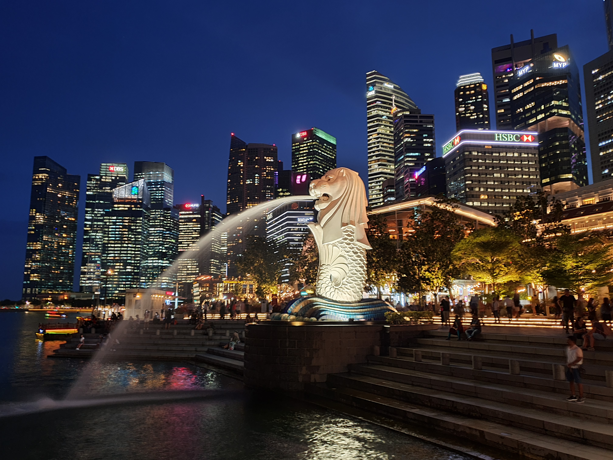
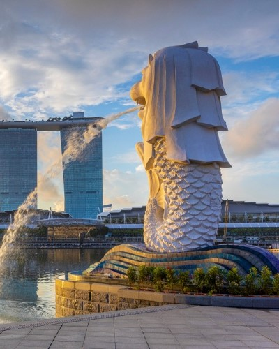
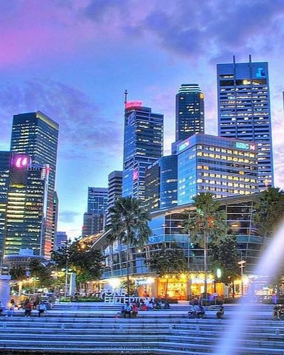
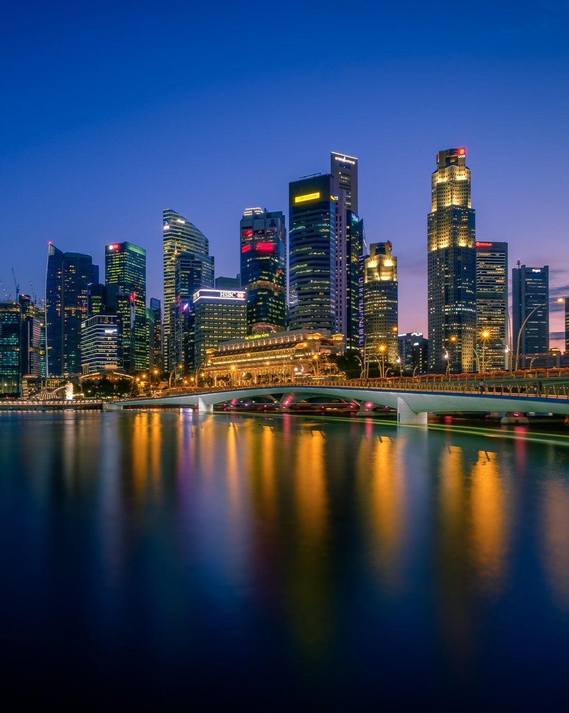
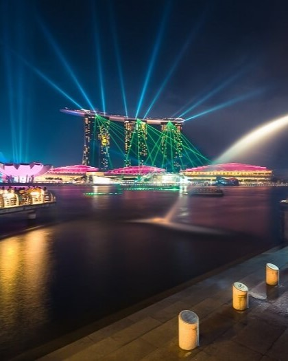
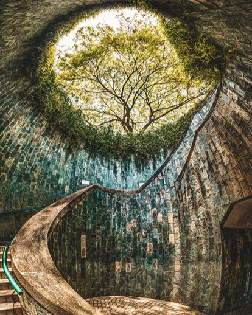
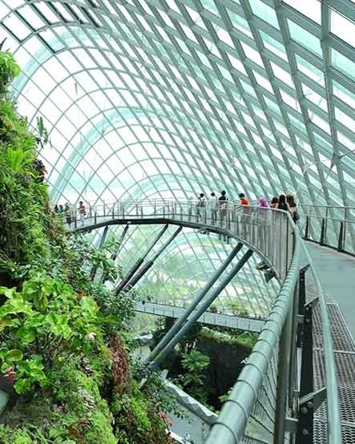
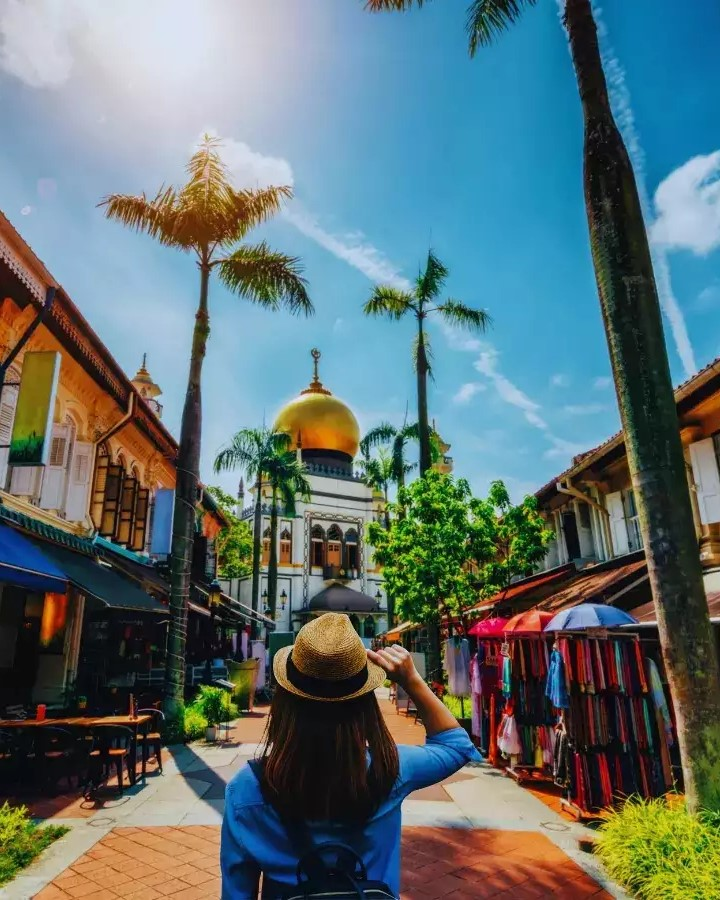
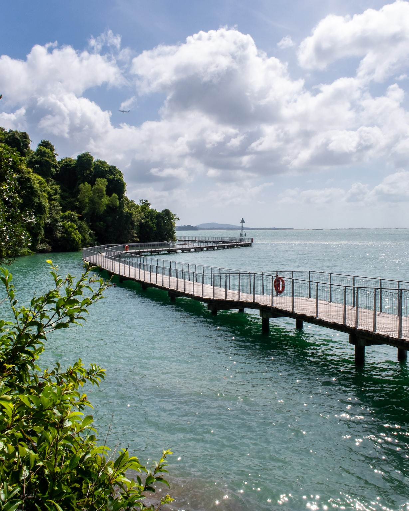

Singapore has always been a dream destination for me, and no visit would be complete without seeing the iconic Merlion! From its breathtaking skyline to its vibrant culture and modern attractions, there’s so much to explore in this dynamic city. In this section, I’ll share why I’m eager to visit, the sights I can’t wait to see, and the experiences I’m most excited about. Join me as I dive into the beauty of Singapore and the legendary Merlion!

The Merlion is Singapore’s iconic statue with a lion’s head and a fish’s body. It represents the city’s history as a fishing village and its growth into a global metropolis. Located at Merlion Park near Marina Bay, it attracts millions of visitors each year. Many come to take photos and enjoy the stunning view of Singapore’s skyline.
I have never traveled outside the country, but my father has due to his work requirements. Each time he visits Singapore, he sends us pictures of the Merlion statue. I find it fascinating, which is why I want to see it for myself. I am eager to witness its beauty in person and experience the captivating presence it holds.

#Merlion_Statue

#Marina_Bay

#Singapore_Skyline

#Marina_Bay_Sands

#Fort_Canning_Park

#Garden_by_the_Bay

#Kampong_Glam

#Pulua_Ubin
{kind=link}
{kind=link}